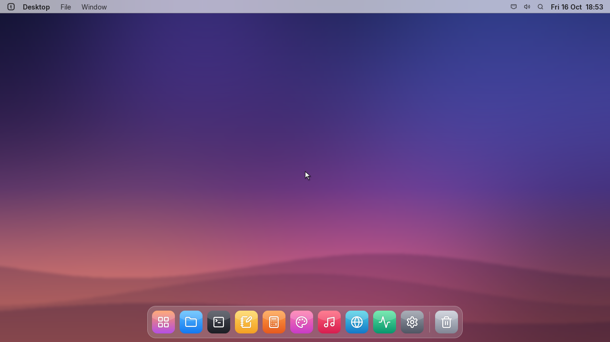

An operating system built from scratch, that runs Linux programs.
tOS is a 64-bit operating system with its own kernel, desktop, network stack and package manager. It runs real Linux x86-64 programs, so gcc, Python, Node.js, Git and SSH work on it.
Download the ISO Read the docsLatest build from GitHub Releases.

Download and try it
The ISO boots on BIOS machines. The easiest way to try it is a virtual machine.
qemu-system-x86_64 -cdrom tOS.iso -m 2048 -vga std -nic user,model=e1000
- QEMU, VMware or VirtualBox: attach the ISO as a CD to a 64-bit machine with BIOS boot.
- Real hardware: write the ISO to a USB stick.
- Give it 2 GB of RAM or more. tOS keeps its files in memory.
- The live user is
toswith an empty password. Usesudofor anything that changes the system.
Installed systems update themselves from Settings → Software Update. Step by step: Installation.
What you get
Desktop
- Windows, dock, launcher, notifications
- Files, Terminal, Settings
- tFire web browser with HTTPS
- Notepad, Paint, viewers, games
Linux programs
- Install with
sudo tpkg install gcc python3 git - Signed packages, 60+ available
- Node.js, Python, Go, Rust, Perl, Tcl/Tk, X11 windows
- SSH client and server
- gdb and strace
Networking has its own stack: Ethernet, ARP, IPv4/IPv6, TCP, UDP, TLS, DHCP, DNS and more. Everything is documented at docs.artfical.com/tos.
Development progress
tOS is developed in the open. These are the main steps so far.
- First releaseBoots with Multiboot, serial console, PCI and a USB keyboard.
- Network cardsDrivers for E1000, virtio-net, NE2000, RTL8139 and PCnet.
- More protocols and file systemsSCTP, DCCP, UDP-Lite, IPsec, VLAN, bridge and bonding. Btrfs, XFS, ZFS and APFS support.
- Package managertpkg with install, remove and upgrade. Crypto system calls and an SSH client.
- GraphicsFramebuffer console and real graphics modes.
- HardeningPointer checks in system calls, file system fixes, a signed update channel.
- Linux programsLoopback network, /proc, Unix sockets, job control, Python 3.9 to 3.14, X11 and Tk, signed packages, and the GNU and build tools (bash, perl, coreutils, cmake, autotools).
What is still missing
We would rather tell you than let you find out.
- Debugging several threads of one program apart, and hardware watchpoints
- GTK, Qt, SDL and xterm
- Files larger than 2 GB
- Some Notepad, Terminal and Network app features are still basic. The docs list them.
Found a bug? Open an issue on GitHub. Security problems: security@artfical.com.